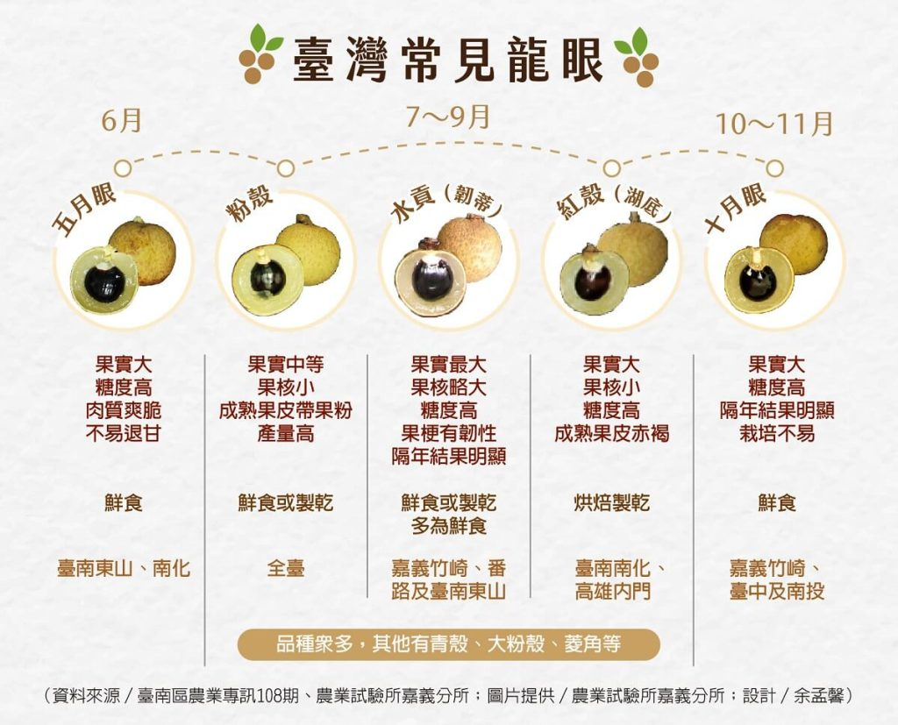
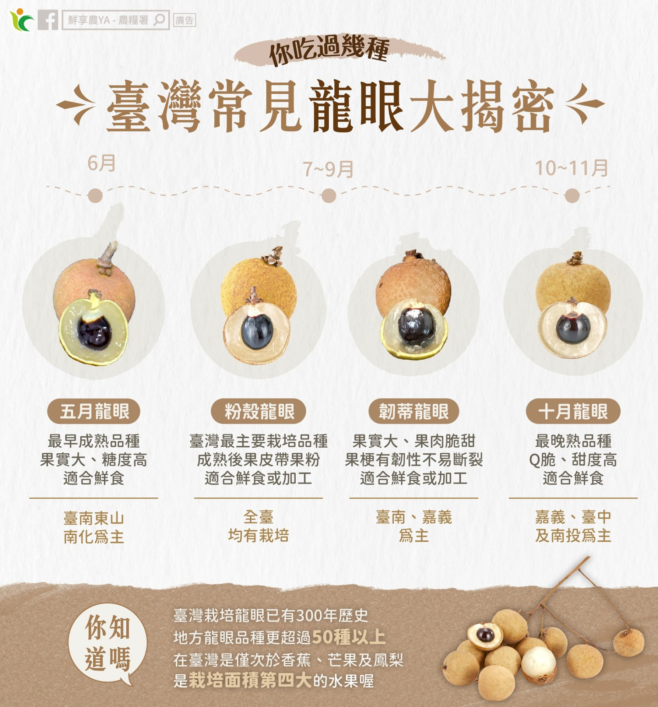
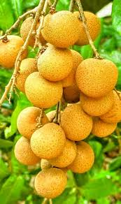

📖 總論
龍眼（Dimocarpus longan Lour.）為無患子科龍眼屬常綠喬木，原產於中國華南地區，與荔枝同科不同屬。明朝《荔枝譜》形容龍眼：「圓如驪珠，赤若金丸，肉似玻璃，核如黑漆」，是夏季最具代表性的水果之一。
臺灣龍眼約 300 年前自閩粵地區引進，經地方果農自行篩選命名，衍生出 50 種以上的品種（農業部農業試驗所嘉義分所種原庫保存）。栽培面積約 11,000–12,000 公頃，為臺灣第四大果樹，僅次於香蕉、芒果、鳳梨。產地集中於臺南、嘉義，加工品龍眼乾（桂圓）與龍眼蜜為重要經濟衍生產品。
龍眼不僅是鮮食佳果，更是臺灣重要的加工農產品。以龍眼木炭慢火烘焙的龍眼乾（桂圓）香氣獨特，是許多臺灣甜湯與養生茶飲的靈魂原料；龍眼花蜜則被譽為臺灣人心目中最好的蜂蜜。


左：粉殼龍眼 — 全臺最主要栽培品種 ｜ 右：十月龍眼 — 最晚熟品種，可至 10 月仍可採收（圖：自由時報食譜自由配）
📅 產期分布一覽
以臺灣中部地區為基準，龍眼產期分為三大階段：
| 產期階段 | 時間 | 代表品種 | 說明 |
|---|---|---|---|
| 🟠 早熟 | 6 月起 | 五月眼、水貢、四季龍眼 | 搶先上市，最早可至 5 月下旬 |
| 🟤 盛產 | 8 月（中元前後） | 粉殼、紅殼、青殼、福眼 | 主力產季，全臺同步上市 |
| 🔵 晚熟 | 至 11 月 | 十月眼 | 最晚熟，延長供應期 |

台灣常見龍眼產期分布圖
📈 產業發展概況
🗺️ 主要產地分布
| 排名 | 縣市 | 約佔比 | 代表產區 |
|---|---|---|---|
| 1 | 臺南市 | 30–35% | 東山、南化、楠西（龍眼乾重鎮） |
| 2 | 嘉義縣 | 20–25% | 竹崎、中埔、番路 |
| 3 | 臺中市 | 15–20% | 太平、霧峰 |
| 4 | 南投縣 | 10–15% | 中寮、名間 |
| 5 | 高雄市 | 8–12% | 內門、田寮 |
⚖️ 產業優勢與挑戰
📂 品種分類總覽
🟤 盛產主力品種
8 月盛產 · 鮮食加工兩用
粉殼 · 紅殼 · 青殼 · 福眼
✨ 早熟／晚熟／特色品種
延長產季 · 特殊風味
五月眼 · 十月眼 · 四季 · 水貢等🟤 品種詳細介紹
粉殼 主力品種 · 全臺栽培最多

粉殼：臺灣最主要栽培品種，成熟時果粉明顯為命名由來，甜度可達 26 度（圖：農業部）
| 項目 | 特徵 |
|---|---|
| 來源 | 果農自行選出的實生變異種 |
| 果實 | 中等大小，種子小，果肉厚實、Q 彈口感佳；成熟時果粉明顯 |
| 甜度 | 甜度高，農傳媒報導可達 26 °Brix（最甜品種之一） |
| 產期 | 8 月上中旬（中元節前後為盛產期） |
| 產地 | 全臺均有種植，臺中、南投、高雄等地栽培較多 |
| 優點 | 產量高且穩定、不易退甘、少有隔年結果現象 |
| 用途 | 適合鮮食及加工（龍眼乾烘焙） |
紅殼（湖底）烘焙專用

紅殼：成熟時果皮呈赤褐色，又名「湖底」，南部最受歡迎（圖：農業部）
| 項目 | 特徵 |
|---|---|
| 別名 | 湖底 |
| 果實 | 果實大、肉厚、果核小，肉質甜脆 |
| 果皮 | 成熟時呈赤褐色（故名紅殼） |
| 風味 | 糖度高；口感軟、水分較多 |
| 產期 | 約 8 月上旬（5–8 月） |
| 產地 | 臺南市南化區、高雄市內門區；南部最受歡迎 |
| 加工 | 烘焙後品質依然很好，很適合加工成龍眼乾 |
| 缺點 | 產量不高 |
青殼（青皮）高甜耐儲

青殼：成熟後果皮呈淡黃褐微帶青綠，果實大、果核小、糖度高、較耐貯藏（圖：農業部）
| 項目 | 特徵 |
|---|---|
| 別名 | 青皮 |
| 果實 | 果大核小，果肉結實 |
| 果皮 | 成熟後呈淡黃褐微帶淡青綠色 |
| 甜度 | 比粉殼更甜 |
| 產期 | 5–8 月 |
| 特色 | 最大特色是採收後果色不易變質、耐儲存 |
| 產地 | 多種植於臺南一帶，產量較少、較不普遍 |
十月眼 最晚熟
十月眼：臺灣最晚熟的龍眼品種，至 10–11 月仍可採收，果實碩大
| 項目 | 特徵 |
|---|---|
| 果實 | 果實碩大 |
| 甜度 | 甜度高，且甜度可持久不降 |
| 口感 | Q 脆 |
| 產期 | 至 10–11 月（最晚熟品種） |
| 市場 | 收成期易遇颱風，價格略高；最受中北部果農歡迎 |
| 研發 | 大量栽植仍待繼續研發 |
福眼 果型最大

福眼：果型最大、荷包形狀，皮薄好剝，吃一顆抵兩顆
| 項目 | 特徵 |
|---|---|
| 果實 | 果型最大，荷包形狀；皮薄好剝，果肉多 |
| 甜度 | 甜度略低於粉殼 |
| 風味 | 體大肉多，因甜度略低吃不膩 |
| 定位 | 傳統品種，適合鮮食 |
其他龍眼品種一覽
| 品種 | 產期類型 | 主要特徵 |
|---|---|---|
| 五月眼 | 最早熟 | 5 月下旬至 6 月即可採收，搶鮮上市 |
| 四季龍眼 | 多次開花 | 一年可多次開花結果，但單次產量較低 |
| 水貢 | 早熟 | 水分含量較高、果肉多汁，適合鮮食 |
| 大粉殼 | 盛產 | 粉殼的大型變異品系，果實較粉殼大 |
| 石硖 | 盛產 | 果核較小、果肉比率高，為優良鮮食品種 |
| 菱角種 | 盛產 | 果形略似菱角，為地方特色品種 |
📊 品種綜合對比表
| 品種 | 果實大小 | 甜度 | 產期 | 核心特色 |
|---|---|---|---|---|
| 粉殼 | 中 | 最高（26°） | 8 月上中旬 | 主力品種 · 果粉明顯 · Q 彈 |
| 紅殼 | 大 | 高 | 8 月上旬 | 赤褐皮 · 烘焙專用 · 南部最愛 |
| 青殼 | 大 | 更高 | 5–8 月 | 青綠皮 · 比粉殼甜 · 耐儲存 |
| 十月眼 | 碩大 | 高 | 10–11 月 | 最晚熟 · Q 脆 · 價格高 |
| 福眼 | 最大 | 中 | 8 月 | 荷包形 · 吃不膩 |
| 五月眼 | 中 | — | 5–6 月 | 最早熟 · 搶鮮上市 |
| 四季龍眼 | 中 | — | 多次 | 可多次開花結果 |
| 水貢 | 中 | — | 早熟 | 多汁 · 適合鮮食 |
🛒 選購消費指南
外觀：果殼完整無裂痕、色澤均勻；粉殼應有明顯白色果粉
觸感：按壓結實有彈性（過軟已過熟或發酵）
果枝：帶枝的龍眼較耐放，枝葉鮮綠表示新鮮採收
保存：常溫通風可放 3–5 天；冷藏前用報紙包裹，可延長至 1 週
- 粉殼：最甜的品種（可達 26°）— 鮮食首選，也適合烘焙龍眼乾
- 紅殼：果大肉厚 — 南部人最愛，烘焙後品質絕佳
- 青殼：比粉殼更甜 + 耐儲存 — 買多不怕壞
- 十月眼：Q 脆口感 — 晚秋限定，錯過等明年
- 福眼：吃一顆抵兩顆 — 怕甜膩的人最適合
- ⚠️ 食用提醒：因甜度及熱量較高，成年人每次建議以 11–12 顆 為限（農糧署建議）
🏢 北農交易代碼對照
以下為本圖鑑收錄品種與臺北農產運銷公司果菜品名代碼對照：
| 北農代碼 | 北農品名 | 對應圖鑑品種 |
|---|---|---|
| K2 | 十月眼 | 十月眼（最晚熟品種） |
| K3 | 粉殼 | 粉殼（主力品種，全臺栽培最多） |
| K4 | 龍眼乾（帶殼） | —（加工品，非鮮果品種） |
| K41 | 龍眼肉 | —（加工品，非鮮果品種） |
| K0 | 其他 | 紅殼（湖底）、青殼（青皮）、福眼、五月眼、四季龍眼、水貢、大粉殼、石硖、菱角種 |
※ 北農龍眼代碼僅收錄十月眼與粉殼兩個鮮食品種，其餘品種實務交易以 K0「其他」統稱。
📚 資料來源
主要參考資料：
品種照片引用自農業部、自由時報食譜自由配及農傳媒。版權歸原機關所有。